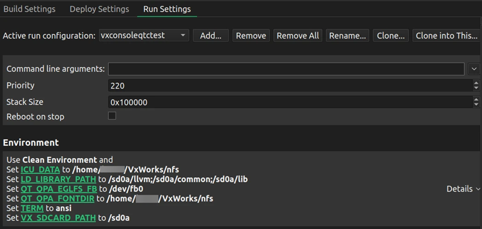

Debug C++ applications on VxWorks devices
Note: Place all the library dependencies on the SD card. Debugging doesn't work from other locations, such as a mounted NFS directory.
Qt Creator only copies the application binaries and other deployable files to the root of the SD card. It doesn't preserve nor create the directory structure on the SD card.
To debug Qt applications, add the following line to your VxWorks source build (VSB) configuration:
vxprj vsb config -s -add "_WRS_CONFIG_TCF_GDB_RSP=y"
To automatically start the GDB server on the device, add the following lines to your VxWorks image project (VIP) configuration:
"INCLUDE_DEBUG_AGENT" "INCLUDE_DEBUG_AGENT_START" "INCLUDE_STANDALONE_SYM_TBL"
For more information, see Qt for VxWorks.
To set up debugging:
- Activate a VxWorks kit for the project.
- Go to Projects > Run Settings.
- Set Priority and Stack size.

- In Environment, set the
LD_LIBRARY_PATHvariable to the location of the libraries on the SD card. If the path to the SD card is not/sd0a, setVX_SDCARD_PATHto the correct location.
To start debugging, select F5 or go to Debug > Start Debugging > Start Debugging of Startup Project.
See also Activate kits for a project, Enable and disable plugins, How to: VxWorks, Debugging, and Qt for VxWorks.